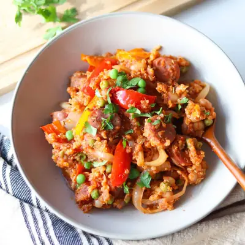

Slow Cooker Sausage Casserole

Ingredients
- 1 pound sausage, sliced
- 1 small onion, sliced
- 2 bell peppers, chopped
- 1 cup quinoa
- 2 tablespoons tomato paste
- 1 teaspoon Italian seasoning
- 1/2 teaspoon garlic powder
- 1/2 teaspoon smoked paprika (optional)
- 1 1/2 cups favorite tomato sauce
- 1 cup low-sodium broth (chicken, beef, or vegetable)
- 15 ounce white beans, rinsed and drained
- 1 cup frozen peas
Steps
- Lightly grease the insert of your slow cooker to prevent sticking. Add all the ingredients except the frozen peas directly into the slow cooker. Give everything a good stir to combine — no need to brown the sausage first!
- Cover and cook on low for 6–7 hours or high for 3–4 hours. In the last 10 minutes of cooking, stir in the frozen peas. They’ll cook through quickly and add a pop of color and sweetness.
- Give it a good stir and garnish with chopped parsley or a sprinkle of cheese, and serve warm.
Recipe by Min Kwon · Kidfriendly Meals, from MJ and Hungryman. Saved here for personal use; the original has the full notes, tips and photos. Open original